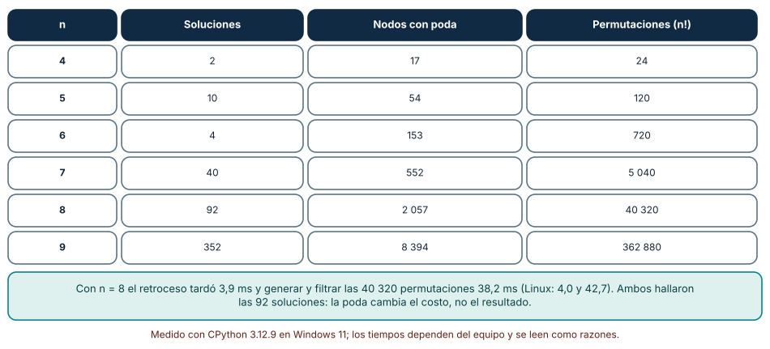
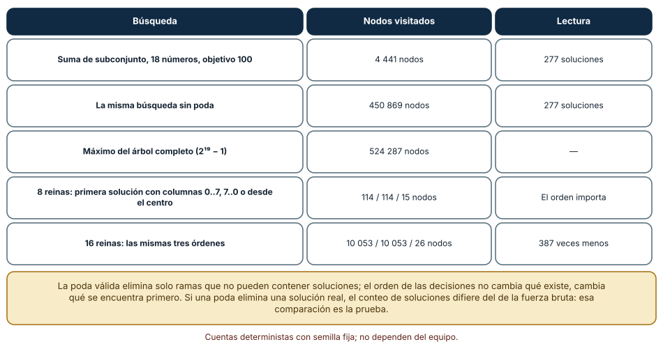
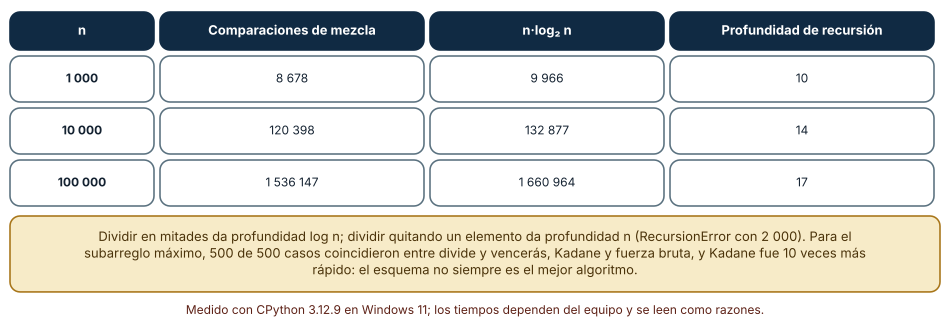

← SE-091 — Algoritmos voraces y programación dinámica · ↑ Parte 07 · 📚 Índice completo · 🌐 Portal · SE-093 — Índices, probabilísticas y estructuras persistentes →
Punto profesional y fundamento pedagógico
Punto profesional. La clase existe para usar backtracking o divide y vencerás con espacio de búsqueda, poda y combinación explícitos.
Por qué aparece aquí. Se sitúa después de Algoritmos voraces y programación dinámica y antes de Índices, probabilísticas y estructuras persistentes: convierte el conocimiento anterior en una decisión observable que la clase siguiente podrá reutilizar. La continuidad se comprueba en el artefacto, no por compartir vocabulario.
Error conceptual que debe corregir. Confundir recursión con estrategia o podar sin preservar soluciones.
Secuencia de aprendizaje. Antes de leer la solución, el estudiante predice el resultado del caso normal y del error conceptual anterior. Luego explica un caso resuelto paso a paso, construye un contraejemplo que cambie la decisión y, sin consultar el texto, reconstruye el mecanismo y lo aplica a una entrada nueva. La secuencia usa predicción, explicación propia, contraste y recuperación. ICAP distingue participación de construcción de conocimiento; How People Learn II exige conectar conocimiento previo, contexto y transferencia; la práctica de recuperación respalda producir de nuevo la explicación tras una demora; y Education for Life and Work exige devolución que explique la causa del error.
Evidencia de aprendizaje. Search-tree.md con ramas, poda válida, recurrencia y peor caso. Debe contener predicción previa, observación, explicación causal, contraejemplo, criterio de aceptación y una nota de qué dato haría cambiar la conclusión.
Límite de la conclusión. Poda efectiva en ejemplos no cambia necesariamente la complejidad.
Trazabilidad fuente → afirmación
| Fuente primaria u oficial | Afirmación que respalda | Lo que no prueba |
|---|---|---|
| MIT 6.006 Introduction to Algorithms | Estructuras, algoritmos, corrección y análisis de complejidad; autoridad: MIT OpenCourseWare | No demuestra por sí sola que el artefacto del estudiante sea correcto. |
| Mathematics for Computer Science | Inducción, grafos, conteo y razonamiento discreto; autoridad: MIT OpenCourseWare | No demuestra por sí sola que el artefacto del estudiante sea correcto. |
| Python Debugging and Profiling | Timeit, cprofile y tracemalloc con sus límites; autoridad: Python Software Foundation | No demuestra por sí sola que el artefacto del estudiante sea correcto. |
Antes de empezar
Esta clase continúa la biblioteca de estructuras y algoritmos de la Parte 07. Recupera la evidencia de la clase anterior, añade una decisión propia de Backtracking, divide y vencerás y deja un artefacto que la clase siguiente deberá consumir. La pregunta activa es: ¿Cómo explorar alternativas sin confundir búsqueda exhaustiva, poda y descomposición independiente?
Prerrequisitos
- Haber completado la clase anterior o reconstruir su contrato y evidencia.
- Python 3.11 o posterior, terminal, editor y Git; un segundo runtime es opcional y debe declararse.
- Trabajar con fixtures sintéticos: ninguna observación necesita datos de una persona o sistema real.
Problema auténtico
La biblioteca de estructuras y algoritmos debe construir un orden válido de tareas con restricciones. Probar permutaciones encuentra solución, pero crece factorialmente; una poda incorrecta elimina la única ruta válida.
Objetivos observables
Al terminar podrás explicar los cinco mecanismos de esta clase, predecir su comportamiento antes de ejecutar, construir un caso normal y uno límite, diagnosticar el fallo controlado, comparar una alternativa y entregar evidencia que otra persona pueda reproducir.
Mapa conceptual
Ver la notación fuente del diagrama
flowchart LR
N1[Espacio de estados] --> N2[Backtracking] --> N3[Poda segura] --> N4[Divide / vencerás] --> N5[Recurrencias / umbral práctico]
N5 -->|fallo o cambio| N1El mapa se lee como una cadena de razonamiento, no como fases obligatorias del runtime. La flecha de retorno indica que un fallo o cambio de requisito obliga a revisar el modelo inicial; no autoriza a parchear solo la última salida.
Temas y por qué importan
| Tema | Por qué cambia una decisión profesional | Evidencia mínima |
|---|---|---|
| Espacio de estados | Cada nodo representa una decisión parcial y cada arista una elección. | Predicción, traza causal y contraejemplo de Espacio de estados en search-tree.md |
| Backtracking | El backtracking elige, avanza, detecta imposibilidad y revierte. | Predicción, traza causal y contraejemplo de Backtracking en search-tree.md |
| Poda segura | Una poda descarta ramas que no pueden mejorar o satisfacer. | Predicción, traza causal y contraejemplo de Poda segura en search-tree.md |
| Divide y vencerás | Se divide en subproblemas independientes, se resuelven y combinan. | Predicción, traza causal y contraejemplo de Divide y vencerás en search-tree.md |
| Recurrencias y umbral práctico | El árbol de recursión explica tiempo y trabajo de combinación. | Predicción, traza causal y contraejemplo de Recurrencias y umbral práctico en search-tree.md |
Conceptos y decisiones
1. Espacio de estados
Cada nodo representa una decisión parcial y cada arista una elección. Antes de programar se define estado, acciones, objetivo e invalidez. Si dos rutas producen el mismo estado relevante, pueden memoizarse; si no, fusionarlas pierde historia necesaria.
2. Backtracking
El backtracking elige, avanza, detecta imposibilidad y revierte. La restauración debe ser simétrica incluso ante error. Copiar estado simplifica razonamiento pero cuesta; mutar y deshacer exige invariantes y pruebas de que no queda contaminación entre ramas.
3. Poda segura
Una poda descarta ramas que no pueden mejorar o satisfacer. Debe derivarse de una cota o restricción necesaria. Una heurística que parece improbable no es poda correcta: puede usarse para ordenar exploración, no para eliminar sin prueba.
4. Divide y vencerás
Se divide en subproblemas independientes, se resuelven y combinan. La independencia y el costo de combinar determinan la recurrencia. Llamar divide-and-conquer a cualquier recursión oculta dependencias y resultados duplicados.
5. Recurrencias y umbral práctico
El árbol de recursión explica tiempo y trabajo de combinación. En tamaños pequeños, overhead domina y un algoritmo simple puede ganar; implementaciones híbridas usan umbral medido sin cambiar corrección.
Retroceso con poda: contar nodos, no solo soluciones
El problema de las n reinas coloca una reina por fila y retrocede cuando una columna o diagonal está ocupada. Contamos los nodos del árbol de búsqueda con poda: para n = 4 a 9, soluciones 2, 10, 4, 40, 92 y 352; nodos visitados 17, 54, 153, 552, 2 057 y 8 394; permutaciones totales (n!) 24, 120, 720, 5 040, 40 320 y 362 880. Para n = 8, generar todas las permutaciones y filtrar tardó 38,2 ms (42,7 en Linux) y el retroceso con poda 3,9 ms (4,0); ambos hallaron las 92 soluciones. La poda cambió el costo, no el resultado.
Ese contraste es la prueba de la poda: una poda es válida si el número de soluciones coincide con el de la enumeración completa en tamaños pequeños. Si difiere, la poda eliminó una rama que sí contenía soluciones.

Cómo leer la figura. Compara la tercera con la cuarta columna: la ventaja crece con n. Dónde deja de valer: el retroceso sigue siendo exponencial en el peor caso; solo cambia la constante y el exponente efectivo. Para n grande se necesitan otras técnicas (heurísticas o reparación local).
Orden de las decisiones y poda por cota
En la suma de subconjunto (18 números, objetivo 100) el árbol completo tiene 2¹⁹ − 1 = 524 287 nodos. Sin poda el retroceso visitó 450 869 nodos; con dos podas (se pasa del objetivo, o aun sumando todo lo que queda no se alcanza) visitó 4 441, 100 veces menos, y encontró las mismas 277 soluciones. La poda por cota usa una suma de sufijos precomputada: una cota barata que descarta ramas enteras.
El orden en que se prueban las decisiones cambia qué se encuentra primero. Para hallar la primera solución de n reinas, probar las columnas de izquierda a derecha o de derecha a izquierda necesitó 114 nodos con n = 8, 262 con n = 12 y 10 053 con n = 16; comenzar por las columnas centrales necesitó 15, 18 y 26 nodos (387 veces menos con n = 16). No cambia qué soluciones existen; cambia cuánto cuesta llegar a la primera.

Cómo leer la figura. Las dos primeras filas comparten el resultado y difieren en 100× el trabajo; las dos últimas muestran el efecto del orden. Dónde deja de valer: las cifras dependen de los datos concretos (18 números elegidos con semilla fija). El orden central funciona bien para reinas; en otros problemas el mejor orden se descubre con heurísticas (primero la variable más restringida).
Divide y vencerás: profundidad, costo y cuándo no conviene
La ordenación por mezcla divide en mitades: con 1 000, 10 000 y 100 000 elementos usó 8 678, 120 398 y 1 536 147 comparaciones, cerca de n·log₂ n (9 966; 132 877; 1 660 964), con profundidad de recursión 10, 14 y 17. Si la división es desigual (quitar un elemento cada vez), la profundidad pasa a ser n: una recursión de ese tipo con 2 000 elementos agotó la pila con RecursionError. Dividir bien es parte de la corrección práctica del algoritmo.
El problema del subarreglo de suma máxima admite divide y vencerás (6,22 ms para 2 000 enteros), pero el algoritmo de Kadane, lineal e iterativo, tardó 0,62 ms: 10 veces menos. Los tres métodos (divide y vencerás, Kadane y fuerza bruta) coincidieron en 500 de 500 casos pequeños. Un esquema general no siempre da el mejor algoritmo.

Cómo leer la figura. La penúltima y la antepenúltima columnas son casi iguales: la mezcla se comporta como predice la teoría. Dónde deja de valer: las comparaciones se contaron con datos aleatorios; con duplicados o datos ordenados cambia la cuenta exacta. El tiempo del subarreglo (Linux: 14,5 ms y 1,59 ms) varió entre sistemas aunque la razón fue parecida.
Definiciones de trabajo
- espacio de estados: cada nodo representa una decisión parcial y cada arista una elección.
- backtracking: el backtracking elige, avanza, detecta imposibilidad y revierte.
- poda segura: una poda descarta ramas que no pueden mejorar o satisfacer.
- divide y vencerás: se divide en subproblemas independientes, se resuelven y combinan.
- recurrencias y umbral práctico: el árbol de recursión explica tiempo y trabajo de combinación.
Las definiciones son operativas para la biblioteca de estructuras y algoritmos. No convierten términos con historia más amplia en sinónimos y deben contrastarse con la documentación primaria enlazada al final.
Ejemplo mínimo
def search(prefix, remaining):
if not remaining:
return prefix
for case in sorted(remaining):
if prerequisites_met(case, prefix):
found = search(prefix + [case], remaining - {case})
if found is not None:
return found
return NoneAntes de ejecutar, predice estado, resultado y error. Después registra versión, comando y salida. Si el fragmento es pseudocódigo o pertenece a otro lenguaje, etiquétalo como tal y no afirmes que fue ejecutado.
Ejemplo profesional
En la biblioteca de estructuras y algoritmos, un caso conserva identidad, prioridad, dependencias, instante de llegada y estado de resolución. La implementación de esta clase debe conservar ese contrato aunque cambie la forma interna. El caso profesional no pregunta únicamente si produce una salida: pregunta quién puede producirla, qué estado observa, cómo falla y qué rastro permite disputar una decisión incorrecta.
Compara el caso normal con autorización falsa, evidencia incompleta, empate y repetición. Un mecanismo es apropiado cuando esas diferencias quedan visibles y localizadas; es peligroso cuando dependen de orden accidental, estado oculto o una convención que el consumidor no puede conocer.
Práctica guiada
- Copia el contrato de entrada y salida antes de escribir implementación.
- Predice el caso normal y un límite; identifica la invariante que no puede romperse.
- Implementa la versión mínima sin I/O dentro del núcleo.
- Ejecuta el caso y conserva comando, versión y salida bajo
evidence/. - Introduce el fallo controlado, reduce la reproducción y formula dos hipótesis rivales.
- Corrige la causa, añade regresión y ejecuta el conjunto completo.
- Compara con otro paradigma o lenguaje indicando qué semántica se preserva.
Ejercicios
- Nodos: instrumenta las n reinas para contar nodos con y sin poda para n = 4 a 9 y verifica que ambas versiones dan el mismo número de soluciones.
- Cota: implementa la suma de subconjunto con la poda de sufijo y mide cuántos nodos ahorra frente al árbol completo.
- Orden: compara tres órdenes de columnas para encontrar la primera solución de 12 reinas y explica la diferencia.
- Profundidad: escribe una división desigual y una en mitades, y reporta la profundidad de recursión para n = 1 000 y 100 000.
Reto verificable
Entrega implementación, fixtures, pruebas y un informe corto. Se aprueba si otra persona ejecuta desde checkout limpio, obtiene los mismos resultados y puede relacionar cada rama o transformación con una regla del dominio. No se aprueba por cantidad de archivos ni por usar la sintaxis característica del paradigma.
Caso conductor
La biblioteca de estructuras y algoritmos recibe casos del motor de reglas comparado, mantiene una frontera de trabajo priorizada y explica por qué el siguiente caso es elegible. Ejecuta una carga pequeña trazable, duplicados, prioridades iguales y una dependencia ausente. Cambia después una sola regla o condición y revisa qué archivos, pruebas y trazas debieron modificarse. Esa superficie de cambio alimenta el proyecto final de la parte.
Preguntas frecuentes
¿Cómo sé que mi poda es válida?
Compara el número de soluciones con la enumeración completa en tamaños pequeños: 92 soluciones para 8 reinas con y sin poda. Si difieren, la poda elimina ramas con soluciones.
¿El retroceso siempre es exponencial?
En el peor caso, sí. Con poda y buen orden puede resolver instancias grandes: 16 reinas necesitaron 26 nodos para la primera solución con el orden central y 10 053 con el orden natural.
¿Cuándo no usar divide y vencerás?
Cuando existe un algoritmo lineal más simple: Kadane fue 10 veces más rápido y más corto. O cuando la partición es desigual y la recursión profunda.
¿Qué límite de recursión debo esperar?
Si divides en mitades la profundidad es log₂ n (17 para 100 000). Si quitas un elemento por llamada es n y el límite por defecto (1 000) se supera con facilidad.
Fallo controlado y diagnóstico
Poda una tarea porque hoy no cumple prerrequisitos, aunque otra tarea de la misma rama los satisface antes. Cambia la poda por chequeo de ciclo/imposibilidad demostrable y añade ese orden como regresión.
Registra síntoma, entrada mínima, hipótesis, observación que descarta cada hipótesis, causa, corrección y prueba de regresión. No cambies simultáneamente implementación, fixture y expectativa.
Cambia la poda de la suma de subconjunto de s > objetivo a s >= objetivo con elementos positivos y busca todas las soluciones. Síntoma: el número de soluciones baja respecto de la búsqueda sin poda. Hipótesis rivales: (a) la enumeración sin poda cuenta repetidos; (b) la poda descarta una rama que ya alcanzó el objetivo. Prueba: contraste con la versión sin poda en un tamaño pequeño (277 soluciones frente a menos). Conclusión: una desigualdad estricta/no estricta mal elegida destruye soluciones sin lanzar error. Guarda el conteo de referencia como prueba.
Errores comunes y cómo corregirlos
| Síntoma | Causa probable | Corrección |
|---|---|---|
| El algoritmo encuentra menos soluciones que la fuerza bruta | Poda que elimina una rama válida | Contrastar el conteo con enumeración completa en n pequeño |
| La búsqueda es lenta aunque el algoritmo es correcto | Orden de decisiones desfavorable | Probar el orden de variables más restringidas primero y medir nodos |
RecursionError en divide y vencerás | Partición desigual con profundidad n | Dividir por la mitad o usar iteración |
| El esquema divide y vencerás es más lento que un bucle | Constantes de la recursión y copias | Comparar con la solución lineal antes de adoptar el esquema |
| El mismo caso da soluciones en otro orden | Orden de exploración distinto | Definir el orden o comparar conjuntos, no listas |
Entorno y archivos clave
work/SE-092/
├── README.md
├── algorithm_library/
│ ├── domain.py
│ └── se_092.py
├── fixtures/cases.json
├── tests/test_se_092.py
└── evidence/diagnosis.mdEl README declara plataforma, runtimes, comandos, limpieza y límites. Evita dependencias externas cuando la biblioteca estándar permita observar el mecanismo; si agregas una, fija procedencia y versión.
Seguridad, ética y accesibilidad
- la autorización forma parte del dominio y no se infiere por ausencia de rechazo;
- no uses
eval, reglas descargadas ni serialización insegura; - limita colas, recursión, tamaño de entrada y tiempo de evaluación;
- redacta trazas y conserva una explicación textual además de color o animación;
- una recomendación automatizada debe poder revisarse, impugnarse y corregirse;
- respeta licencias de ejemplos y atribuye adaptaciones.
Puente hacia el trabajo con agentes
Cuando se le pide a un agente que resuelva un problema combinatorio, tiende a entregar fuerza bruta o una poda que «parece» razonable. Pide que reporte nodos visitados y que compare el conteo de soluciones con la enumeración completa en una instancia pequeña. Una poda defectuosa es un error silencioso; el harness puede incluir ese contraste como prueba obligatoria con un límite de tiempo.
Transferencia
Traslada un fixture al segundo modelo o lenguaje. Compara representación de ausencia, error, mutabilidad, orden y cancelación. La transferencia está lograda cuando el contrato se conserva y las diferencias están explicadas, no cuando la sintaxis se parece.
Evaluación y evidencia
| Criterio | Evidencia para aprobar |
|---|---|
| comprensión | explicación causal de los cinco mecanismos |
| corrección | normal, límite, inválido y contraejemplo |
| diseño | estado, efectos y contrato localizables |
| diagnóstico | reproducción mínima y regresión |
| transferencia | comparación semántica, no estética |
| reproducibilidad | versiones, comandos, salida y límites |
Fuentes
- MIT 6.006 Introduction to Algorithms — Estructuras, algoritmos, corrección y análisis de complejidad; autoridad: MIT OpenCourseWare.
- Python Data Model — Semántica de secuencias, conjuntos, mappings, igualdad y hash; autoridad: Python Software Foundation.
- Python Standard Library — Deque, heapq, bisect, graphlib y contenedores disponibles; autoridad: Python Software Foundation.
- Python Debugging and Profiling — Timeit, cprofile y tracemalloc con sus límites; autoridad: Python Software Foundation.
- Mathematics for Computer Science — Inducción, grafos, conteo y razonamiento discreto; autoridad: MIT OpenCourseWare.
- SWEBOK Guide v4.0a — Construcción, medición y fundamentos de ingeniería; autoridad: IEEE Computer Society.
Cada fuente respalda el mecanismo indicado; ninguna demuestra que la implementación de la biblioteca de estructuras y algoritmos sea correcta. Esa afirmación depende de fixtures, pruebas, trazas y revisión reproducible.
- MIT 6.006: Divide and Conquer y recurrencias — ordenación por mezcla, recurrencias y teorema maestro.
- Python:
itertools— permutaciones y combinaciones para fuerza bruta de contraste. - Python:
sys.setrecursionlimit— límite de recursión y sus riesgos. - MIT 6.042J: Mathematics for Computer Science — conteo, recurrencias e inducción para razonar sobre el tamaño del árbol de búsqueda.
Límites y siguiente paso
La exploración exacta puede seguir siendo intratable. La siguiente clase presenta índices, estructuras probabilísticas y persistentes con garantías explícitas, no magia de rendimiento.
Glosario
- espacio de estados: cada nodo representa una decisión parcial y cada arista una elección.
- backtracking: el backtracking elige, avanza, detecta imposibilidad y revierte.
- poda segura: una poda descarta ramas que no pueden mejorar o satisfacer.
- divide y vencerás: se divide en subproblemas independientes, se resuelven y combinan.
- recurrencias y umbral práctico: el árbol de recursión explica tiempo y trabajo de combinación.
← SE-091 — Algoritmos voraces y programación dinámica · ↑ Parte 07 · 📚 Índice completo · 🌐 Portal · SE-093 — Índices, probabilísticas y estructuras persistentes →